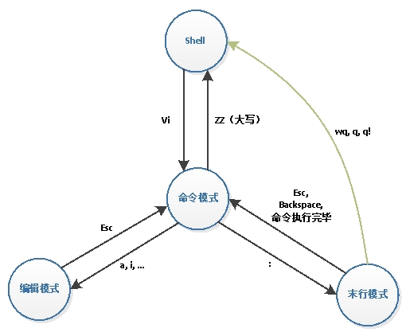
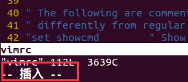
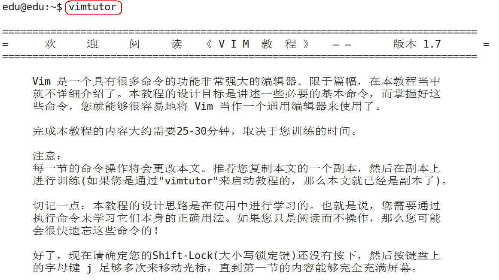

1.5.1 概述
1.5.1.1 什么是vi（vim）
vi (Visual interface)编辑器是 Linux 系统中最常用的文本编辑器，vi 在Linux界有编辑器之神的美誉，几乎所有的 Linux 发行版中都包含 vi 程序。
vi 工作在字符模式下，不需要图形界面，非常适合远程及嵌入式工作，是效率很高的文本编辑器，尽管在 Linux 上也有很多图形界面的编辑器可用，但vi的功能是那些图形编辑器所无法比拟的。
vim 是 vi 的升级版，它不仅兼容 vi 的所有指令，而且还有一些新的特性，例如 vim 可以撤消无限次、支持关键词自动完成、可以用不同的颜色来高亮你的代码。vim 普遍被推崇为类 vi 编辑器中最好的一个。
1.5.1.2 工作模式
vi有三种基本工作模式: 命令模式、文本输入模式(编辑模式)、末行模式。

1) 命令模式
任何时候,不管用户处于何种模式,只要按一下ESC键,即可使vi进入命令模式。我们在shell环境(提示符为$)下输入启动vi命令，进入编辑器时，也是处于该模式下。
在命令模式下，用户可以输入各种合法的vi命令，用于管理自己的文档。此时从键盘上输入的任何字符都被当做编辑命令来解释，若输入的字符是合法的vi命令，则vi在接受用户命令之后完成相应的动作。但需注意的是，所输入的命令并不在屏幕上显示出来。若输入的字符不是vi的合法命令，vi会响铃报警。
2) 文本输入模式(编辑模式)
在命令模式下输入插入命令i（I）、附加命令a（A） 、打开命令o（O）、替换命s（S）都可以进入文本输入模式，此时vi窗口的最后一行会显示“插入”。

在该模式下,用户输入的任何字符都被vi当做文件内容保存起来，并将其显示在屏幕上。在文本输入过程中，若想回到命令模式下，按键ESC即可。
3) 末行模式 末行模式下，用户可以对文件进行一些附加处理。尽管命令模式下的命令可以完成很多功能，但要执行一些如字符串查找、替换、显示行号等操作还是必须要进入末行模式的。
在命令模式下，输入冒号即可进入末行模式。 此时vi窗口的状态行会显示出冒号，等待用户输入命令。用户输入完成后，按回车执行，之后vi编辑器又自动返回到命令模式下。
1.5.1.3 vim教程

1.5.2 vi基本操作
1.5.2.1 打开文件
vi filename：打开或新建文件，并将光标置于第一行行首，如果文件不存在，则会新建文件。

1.5.2.2 编辑文件
如果通过vi打开一个已经存在的文件，首先进入命令模式，此时输入的任何字符都被视为命令，不能输入内容。

1.5.2.3 保存文件
一定要先退出插入模式(按Esc进入命令模式)，然后(小写状态下)，shift + zz（按住 “shift” + 按两下“z”键），或者（大写状态下：ZZ） 即可保存退出当前文件。
1.5.3 vi实用操作
1.5.3.1 命令模式下的操作
1) 切换到文本输入模式
| 按键 | 功能 |
|---|---|
| a | 光标位置右边插入文字 |
| i | 光标位置当前处插入文字 |
| o(字母) | 光标位置下方开启新行 |
| O(字母) | 光标位置上方开启新行 |
| I | 光标所在行首插入文字 |
| A | 光标所在行尾插入文字 |
| s | 删除光标后边的字符，从光标当前位置插入 |
| S | 删除光标所在当前行，从行首插入 |
2) 光标移动
| 按键 | 功能 |
|---|---|
| Ctrl + f | 向前滚动一个屏幕 |
| Ctrl + b | 向后滚动一个屏幕 |
| gg | 到文件第一行行首 |
| G(大写) | 到文件最后一行行首，G必须为大写 |
| mG或mgg | 到指定行，m为目标行数 |
| 0(数字) | 光标移到到行首 |
| $ | 光标移到到行首 |
3) 复制粘贴
| 按键 | 功能 |
|---|---|
| [n]yy | 复制从当前行开始的 n 行 |
| p | 把粘贴板上的内容插入到当前行 |
4) 删除
| 按键 | 功能 |
|---|---|
| [n]x | 删除光标后 n 个字符 |
| [n]X | 删除光标前 n 个字符 |
| D | 删除光标所在开始到此行尾的字符 |
| [n]dd | 删除从当前行开始的 n 行（准确来讲，是剪切，剪切不粘贴即为删除） |
| dG | 删除光标所在开始到文件尾的所有字符 |
| dw | 删除光标开始位置的字,包含光标所在字符 |
| d0(0为数字) | 删除光标前本行所有内容,不包含光标所在字符 |
4) 撤销恢复
| 按键 | 功能 |
|---|---|
| .(点) | 执行上一次操作 |
| u | 撤销前一个命令 |
| ctrl+r | 反撤销 |
5) 保存退出
| 按键 | 功能 |
|---|---|
| ZZ(shift+z+z) | 保存退出 |
6) 查找
| 按键 | 功能 |
|---|---|
| /字符串 | 从当前光标位置向下查找（n，N查找内容切换） |
| ?/字符串 | 从当前光标位置向上查找（n，N查找内容切换） |
7) 替换
| 按键 | 功能 |
|---|---|
| r | 替换当前字符 |
| R | 替换当前行光标后的字符 |
8) 可视模式
| 按键 | 功能 |
|---|---|
| v | 按字符移动，选中文本，可配合h、j、k、l选择内容，使用d删除，使用y(一个y)复制 |
1.5.3.2 末行模式下的操作
1) 保存退出
| 按键 | 功能 |
|---|---|
| :wq | 保存退出 |
| :x(小写) | 保存退出 |
| :w filename | 保存到指定文件 |
| :q | 退出，如果文件修改但没有保存，会提示无法退出 |
| :q! | 退出，不保存 |
2) 替换
| 按键 | 功能 |
|---|---|
| :s/abc/123/ | 光标所在行的第一个abc替换为123 |
| :s/abc/123/g | 光标所在行的所有abc替换为123 |
| :1,10s/abc/123/g | 将第一行至第10行之间的abc全部替换成123 |
| :%s/abc/123/g | 当前文件的所有abc替换为12 |
| :%s/abc/123/gc | 同上，但是每次替换需要用户确认 |
3) 分屏
| 按键 | 功能 |
|---|---|
| :sp | 当前文件水平分屏 |
| :vsp | 当前文件垂直分屏 |
| : sp | 文件名 当前文件和另一个文件水平分屏 |
| : vsp 文件名 | 当前文件和另一个文件垂直分屏 |
| ctrl-w-w | 在多个窗口切换光标 |
| :wall/:wqall/:qall | 保存/保存退出/退出所有分屏窗口 |